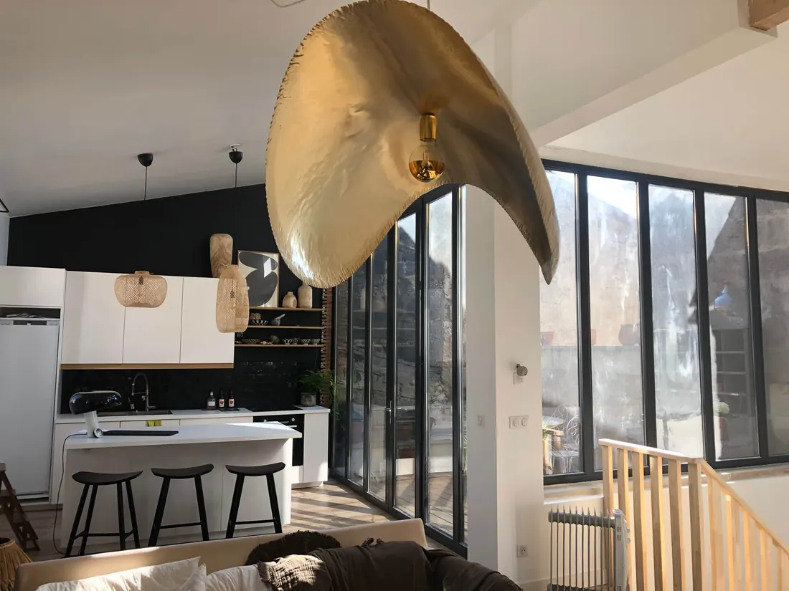

Una semana en familia en la Gironda
La ciudad y luego el océano: en una semana, la Gironda ofrece a las familias lo mejor de los dos mundos. Tres días en Burdeos para la piedra dorada, los muelles y los museos; cuatro días en Lacanau para el lago, las olas y los paseos en bici. Aquí tienes nuestro itinerario, día a día.


Días 1 a 3: Burdeos
Día 1 · Los muelles y el Espejo de Agua
Instalación y luego, a los muelles del Garona, a pie o en tranvía. Los niños corren por el Espejo de Agua frente a la plaza de la Bolsa (cuando hace buen tiempo), antes de un paseo en bici o en patinete junto al río, sin coches.
Día 2 · Ciencia, naturaleza y luces
Por la mañana, Cap Sciences y sus exposiciones interactivas, o el Muséum de Bordeaux – sciences et nature y el Jardin Public justo al lado. Por la tarde, las exposiciones inmersivas de los Bassins des Lumières, en la antigua base de submarinos. Por la noche, cena en el barrio de Saint-Pierre.
Día 3 · Una escapada a elegir
- La duna de Pilat y la bahía de Arcachon (aproximadamente una hora): la duna más alta de Europa y luego un baño en las aguas tranquilas de la bahía.
- Saint-Émilion (unos 45 minutos): pueblo medieval Patrimonio de la Humanidad, entre viñedos.
Dónde alojarse: la Maison de Pierre, casa urbana de piedra de sillería para 8 personas (5 dormitorios), a 10 minutos a pie del centro y a 4 minutos del tranvía. No es adecuada para bebés menores de 2 años. Más ideas en nuestra guía de Burdeos en familia.
Trayecto: Burdeos → Lacanau (aproximadamente 1 h)
Algo menos de una hora de carretera entre pinos. Si tienes tiempo, puedes desviarte por la ruta de los grandes vinos del Médoc (Margaux, Saint-Julien, Pauillac) y visitar los châteaux con cita previa.
Días 4 a 7: Lacanau
Día 4 · El lago
Llegada a Le Moutchic, en el lado del lago. Primer baño en la playa de Le Moutchic, en el lago, vigilada en verano: agua dulce, sin olas, perfecta para los pequeños. Final del día en el pantalán, junto al agua.
Día 5 · El océano
Rumbo a Lacanau-Océan (10 minutos en coche, unos veinte en bici): baño en una playa vigilada, entre las banderas, y por qué no una primera clase de surf o bodyboard en una escuela para los mayores. Consulta nuestra guía de las playas de Lacanau.
Día 6 · Bici y pádel surf
Paseo en bici por los carriles que atraviesan el pinar y, por la tarde, pádel surf o kayak en el lago. Los aficionados pueden jugar un recorrido de golf, a 3 minutos de la casa.
Día 7 · Descanso
Un último día entre la piscina, el jardín y el lago, antes de volver por Burdeos (estación de Saint-Jean o aeropuerto de Mérignac).
Dónde alojarse: la Maison du Lac, casa familiar para 12 personas (6 dormitorios, 4 aseos), con piscina privada de abril a octubre (sin valla: es imprescindible vigilar a los niños), a 50 metros del lago. Más ideas en nuestra guía de Lacanau en familia.
¿Cuándo ir?
De junio a septiembre para el baño: en julio y agosto, cuenta con unos 27 °C por la tarde en Burdeos y 25 °C en Lacanau, con el agua del océano entre 20 y 22 °C (medias 2015-2024, fuente Open-Meteo). Junio y septiembre son más tranquilos y a menudo muy agradables. En primavera el itinerario también funciona muy bien, cambiando el baño en el océano por paseos.
Reservar las dos casas
Las dos casas se reservan directamente en esta web, con un 10 % de descuento en toda la estancia respecto a Airbnb. Elige tus fechas en Burdeos y luego en Lacanau: los calendarios muestran la disponibilidad en tiempo real.
Fechas en BurdeosFechas en Lacanau
Preguntas frecuentes
¿Cuánto se tarda entre Burdeos y Lacanau?
Aproximadamente una hora en coche, según el tráfico.
¿Cómo organizar una semana en familia en la Gironda?
Empieza con tres días en Burdeos para visitar la ciudad a pie y en tranvía, y luego pasa cuatro días en Lacanau entre el lago, el océano y los carriles bici, antes de volver por Burdeos (estación de Saint-Jean o aeropuerto de Mérignac).
¿Se puede alquilar una casa en Burdeos y otra en Lacanau para el mismo viaje?
Sí: la Maison de Pierre en Burdeos (8 personas) y la Maison du Lac en Lacanau (12 personas) se reservan directamente en sable-et-pierre.com, con un 10 % de descuento en cada estancia.